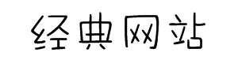
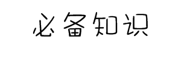

×
注意：
以下是个人总结收集的面试题 (正在开发中)

leetcode
剑指offer
牛客网

1.请先做一下自我介绍
2.方便说一下您现在的薪资么
3.你还有什么问题要问我的
1. https和http有什么区别
2. 事务的隔离级别
3. 常见的数据库优化策略
4. 常见的内存泄漏原因及解决方法
5. linux查看进程，日志，内存，文件查看，编辑，权限编辑命令
6. 分布式一致性算法(raft，paxos)
7. hashmap的实现(链地址法),扩容方案(每次是2倍),为什么(位运算)
8. concurrentHashmap的实现
9. 数据库事务特性,脏读幻读不可重复读,几种隔离级别,分别是怎么实现的
10. 行级锁和间隙锁听说过么
11. 简述你知道的设计模式
12. 列举10个java里面常见的异常
13. 简述tcp三次握手
14. 进程之间是如何通信的
15. 线程和进程的区别
16. 简述ISO七层模型
17. http和https的区别
18. 抢红包和秒杀是肿么做的
19. 聚集索引和非聚集索引如何实现
20. synchronized和lock的区别
21. hashmap和hashtable的区别
22. 数据库索引什么时候会失效
23. 数据库索引有哪些
24. 序列化/反序列化原理
25. 如何在linux中查看一个5g大的日志文件
26. 排序算法
27. 进程和线程的区别
28. tcp udp的区别
29. 索引为什么用B+树而不是二叉树
30. 为什么扫二维码可以实现登录